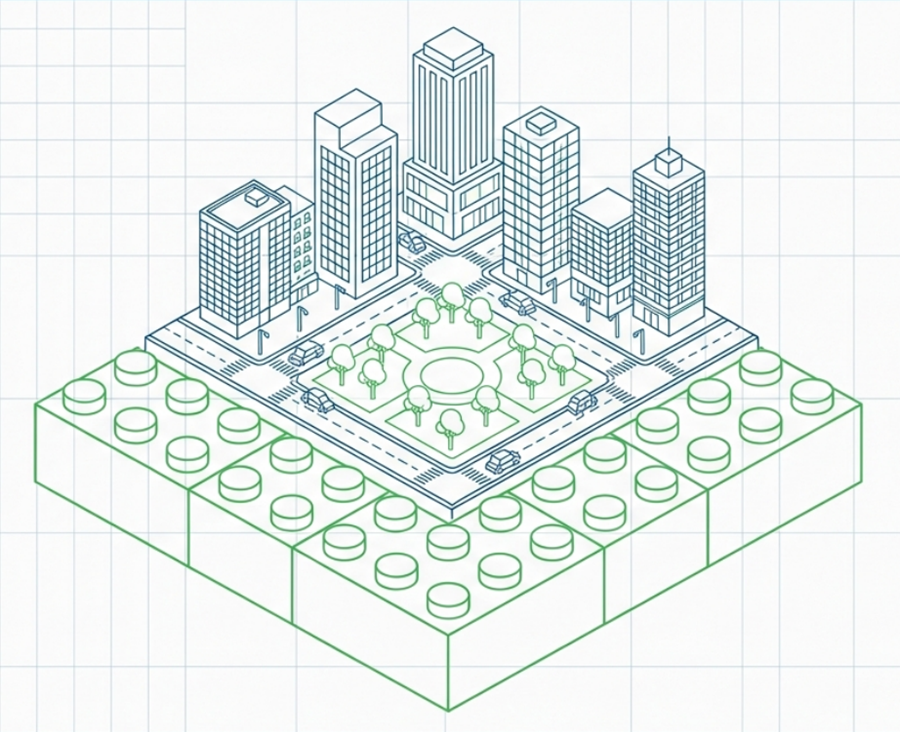
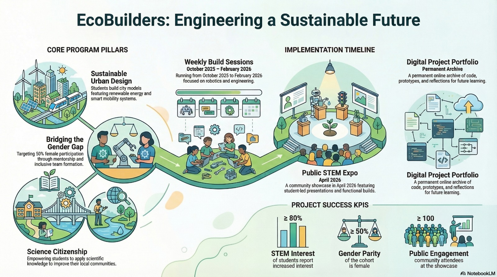

Build prototypes
Students use practical activities to turn ideas into models, systems, and working solutions.
A creative learning programme where students design sustainable cities, build prototypes, explore robotics, and develop the confidence to solve real-world challenges.

EcoBuilders connects engineering, environmental responsibility, and creativity. The programme is designed to help young people understand how technology can improve communities while developing communication, teamwork, and problem-solving skills.
Students use practical activities to turn ideas into models, systems, and working solutions.
Participants experiment with design thinking, robotics, sensors, and sustainable urban systems.
Final presentations help students communicate their work and connect it to community needs.
The programme combines technical learning with social purpose, making sustainability practical, visible, and engaging for students.
Students imagine greener cities with renewable energy, smart mobility, and responsible planning.
Inclusive teams and mentoring encourage wider participation and representation in STEM.
Learners use scientific thinking to understand and improve their local communities.
Projects can be documented through code, photos, reflections, and prototype evidence.
A clear timeline helps participants, schools, and partners understand how the programme develops from learning sessions to a final community presentation.

Hands-on sessions focused on engineering, robotics, sustainability, and prototype development.
A community showcase where students present functional builds and explain their design process.
An online record of prototypes, code, reflections, and learning outcomes for future use.
Use this video area to introduce the project, explain the learning journey, and make the programme feel more tangible for visitors and partners.
These cards can later be replaced with real photos, but they are already structured to present outcomes in a professional and easy-to-read way.
Urban prototypes exploring clean energy, transport, green spaces, and smart infrastructure.
Builds that introduce automation, sensors, logic, and problem-solving through practical tasks.
Students explain their ideas, reflect on improvements, and share their learning with others.
Replace this email with the final project contact when ready. This call-to-action is designed to help visitors quickly understand the next step.